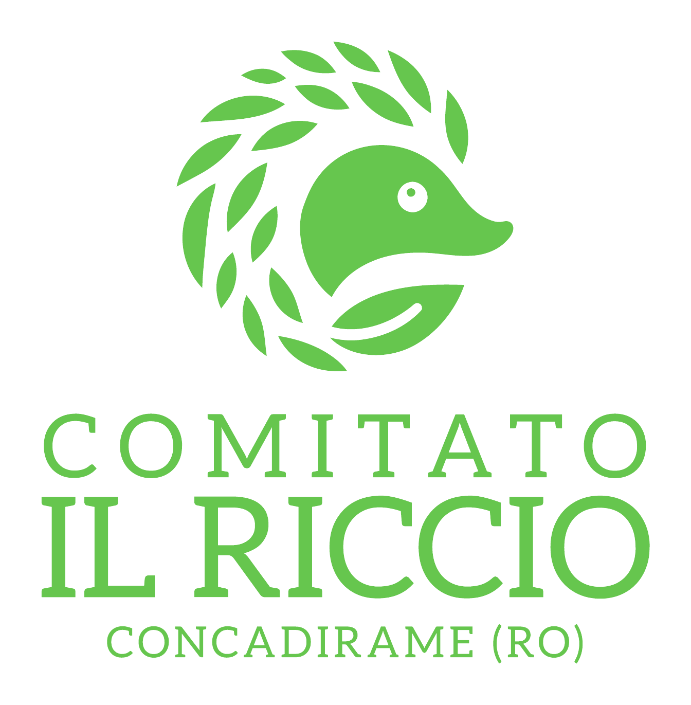

Incontro svolto
25 settembre 2026 · ore 20.30
Lusia
Biblioteca comunale
presso la scuola elementare
Incontro pubblico dedicato al ricorso ECOPOL e all’informazione dei cittadini.

Una raccolta fondi per sostenere le spese legali e tecniche necessarie a sottoporre il provvedimento autorizzativo al vaglio della giustizia amministrativa.
Il 31 agosto 2026 la Provincia di Rovigo ha rilasciato il Provvedimento Autorizzatorio Unico relativo all’ampliamento dell’impianto ECOPOL di via G. Amendola 122–124 a Rovigo.
L’autorizzazione comprende una nuova attività di recupero di rifiuti pericolosi e non pericolosi mediante desorbimento termico, tra cui terre contaminate e fanghi.
Il progetto introduce quindi una linea di trattamento dei rifiuti con una capacità autorizzata fino a 45.000 tonnellate l’anno.
Il Comitato Il Riccio intende chiedere al Tribunale Amministrativo Regionale di verificare il provvedimento con cui è stato autorizzato l’ampliamento dell’impianto ECOPOL.
Il ricorso serve a sottoporre gli atti e il procedimento alla valutazione della giustizia amministrativa. I motivi giuridici saranno definiti e presentati dai professionisti incaricati nelle sedi competenti.
Il Comitato rende disponibili i documenti pubblici del procedimento e gli aggiornamenti sull’azione, così che cittadini e interessati possano consultare direttamente le fonti.
Un’azione legale comporta spese per assistenza legale, eventuali consulenze tecniche, contributi e attività connesse al procedimento. Ogni contributo può aiutarci a sostenere questo percorso.
L’archivio Drive del Comitato è il punto di accesso stabile alle copie dei documenti raccolti. È disponibile anche il collegamento della Provincia di Rovigo ai documenti del procedimento ECOPOL.
Le copie dei documenti pubblicati nell’ambito della pratica sono conservate nell’archivio Drive del Comitato. Per il riscontro alla fonte istituzionale è disponibile anche l’archivio documentale della Provincia di Rovigo.
Gli appuntamenti del Comitato Il Riccio per informare i cittadini sul procedimento ECOPOL, sul ricorso e sulla raccolta fondi.
Biblioteca comunale
presso la scuola elementare
Incontro pubblico dedicato al ricorso ECOPOL e all’informazione dei cittadini.
Azienda Galiazzo
via Nogarazze, 1
Incontro pubblico dedicato al procedimento ECOPOL, al ricorso e alla raccolta fondi.
Ex scuola primaria
via Bassa, 1
Incontro pubblico aperto ai cittadini per sostenere il ricorso contro l’impianto ECOPOL.
Scuola primaria Duca D’Aosta
via Galvani, 20
Incontro pubblico aperto ai cittadini per sostenere il ricorso contro l’impianto ECOPOL.
Ex scuola primaria
via Ramazzina, 2
Incontro pubblico aperto ai cittadini per sostenere il ricorso contro l’impianto ECOPOL.
In questa sezione saranno pubblicati gli sviluppi della raccolta fondi e del percorso legato al ricorso, con comunicazioni essenziali e date di riferimento.
La Provincia di Rovigo ha pubblicato il provvedimento autorizzativo relativo all’ampliamento dell’impianto ECOPOL.
Il Comitato Il Riccio ha attivato la raccolta fondi per sostenere le spese legali e tecniche connesse al ricorso.
È disponibile un archivio pubblico su Google Drive con le copie dei documenti del procedimento raccolti dal Comitato.
Si è svolto l’incontro pubblico dedicato al ricorso ECOPOL e alla raccolta fondi.
Si è svolto l’incontro pubblico presso Azienda Galiazzo, con accesso da via Nogarazze 1.
Appuntamento alle ore 10.30 presso l’ex scuola primaria, via Bassa 1.
Appuntamento alle ore 18.30 presso la scuola primaria Duca D’Aosta, via Galvani 20.
Appuntamento alle ore 10.30 presso l’ex scuola primaria, via Ramazzina 2.
Pubblicheremo qui le comunicazioni successive, in modo sintetico e verificabile.
Segui i canali del Comitato per ricevere gli aggiornamenti sugli incontri, sul ricorso e sui documenti pubblicati.
Puoi iscriverti al Comitato o consultare liberamente lo Statuto del Comitato.